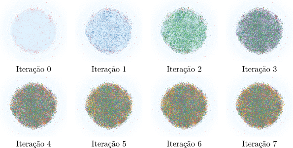

Grafo de genealogia acadêmica (propagação de tópicos)

Posicione o mouse sobre a imagem para ver os detalhes.
Identificação, estruturação e análise do fluxo de conhecimento científico: Um método computacional baseado em estruturas de genealogia acadêmica by L. Rossi.